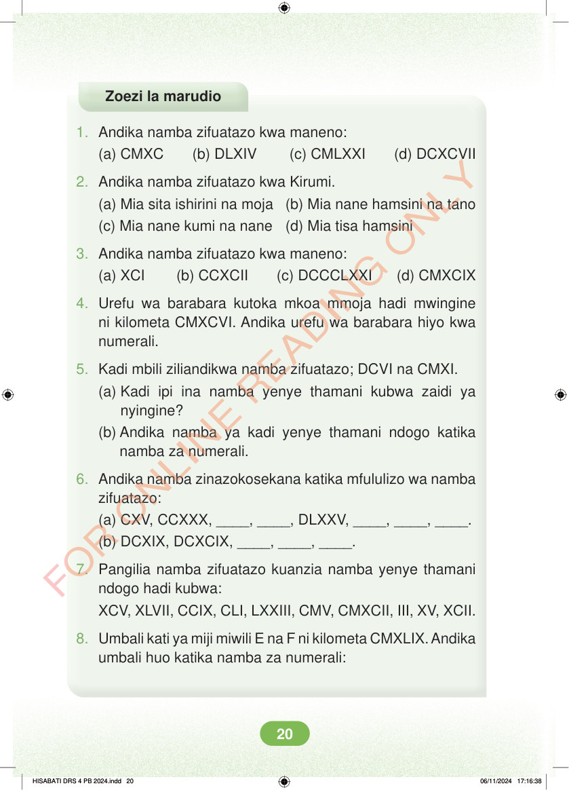

<!DOCTYPE html>
<html lang="sw-TZ"><head><meta charset="utf-8"><meta name="viewport" content="width=device-width,initial-scale=1">
<title>Hisabati: Kitabu cha Mwanafunzi Darasa la Nne</title>
<meta name="title-id" content="pg026_sec001"><meta name="page-section-id" content="26">
<link href="./content/tailwind_output.css" rel="stylesheet"><link href="./assets/libs/fontawesome/css/all.min.css" rel="stylesheet"><link href="./assets/fonts.css" rel="stylesheet">
<style>body{margin:0;background:#eef1ed}main{width:100%;display:flex;justify-content:center;padding:1rem 1rem 5rem;box-sizing:border-box}#content{width:100%;display:flex;justify-content:center}.pdf-page{position:relative;width:min(calc(100vw - 2rem),56rem);aspect-ratio:540.8980102539062/750.6610107421875;background:white;box-shadow:0 4px 24px #0002;overflow:hidden}.pdf-page img{position:absolute;inset:0;width:100%;height:100%;object-fit:fill}</style>
</head><body><main><h1 class="sr-only" id="page-heading">Ukurasa wa 26</h1><div id="content" class="opacity-0"><section role="article" data-section-type="pdf_accessible_page" data-section-id="pg026_sec001" aria-labelledby="page-heading" class="pdf-page"><p class="sr-only" data-id="pg026_gp001_tx001">Zoezi la marudio 1. Andika namba zifuatazo kwa maneno: (a) CMXC (b) DLXIV (c) CMLXXI (d) DCXCVII 2. Andika namba zifuatazo kwa Kirumi. (a) Mia sita ishirini na moja (b) Mia nane hamsini na tano (c) Mia nane kumi na nane (d) Mia tisa hamsini 3. Andika namba zifuatazo kwa maneno: (a) XCI (b) CCXCII (c) DCCCLXXI (d) CMXCIX 4. Urefu wa barabara kutoka mkoa mmoja hadi mwingine ni kilometa CMXCVI. Andika urefu wa barabara hiyo kwa numerali. 5. Kadi mbili ziliandikwa namba zifuatazo; DCVI na CMXI. (a) Kadi ipi ina namba yenye thamani kubwa zaidi ya nyingine? (b) Andika namba ya kadi yenye thamani ndogo katika namba za numerali. 6. Andika namba zinazokosekana katika mfululizo wa namba zifuatazo: (a) CXV, CCXXX, ____, ____, DLXXV, ____, ____, ____. (b) DCXIX, DCXCIX, ____, ____, ____. 7. Pangilia namba zifuatazo kuanzia namba yenye thamani ndogo hadi kubwa: XCV, XLVII, CCIX, CLI, LXXIII, CMV, CMXCII, III, XV, XCII. 8. Umbali kati ya miji miwili E na F ni kilometa CMXLIX. Andika umbali huo katika namba za numerali: HISABATI DRS 4 PB 2024.indd 20 HISABATI DRS 4 PB 2024.indd 20 06/11/2024 17:16:38 06/11/2024 17:16:38</p></section></div></main><div class="relative z-50" id="interface-container"></div><div class="relative z-50" id="nav-container"></div><script src="./assets/offline-preloader.js"></script><script src="./assets/scorm.js"></script><script src="./assets/base.bundle.local.js"></script></body></html>